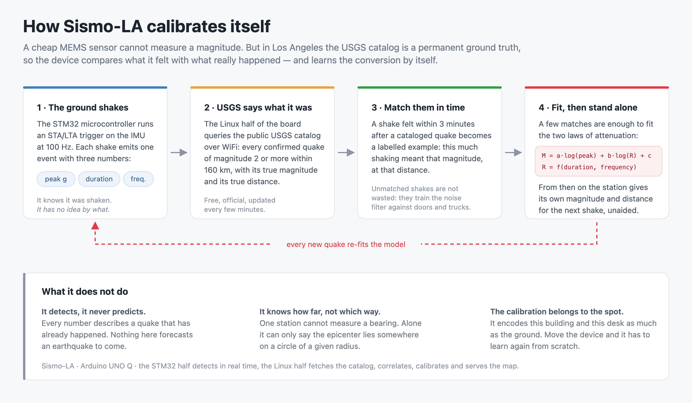
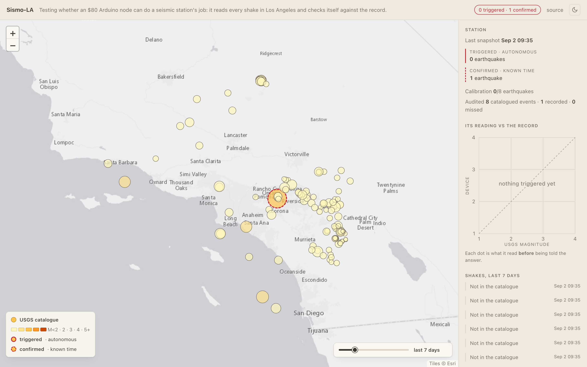
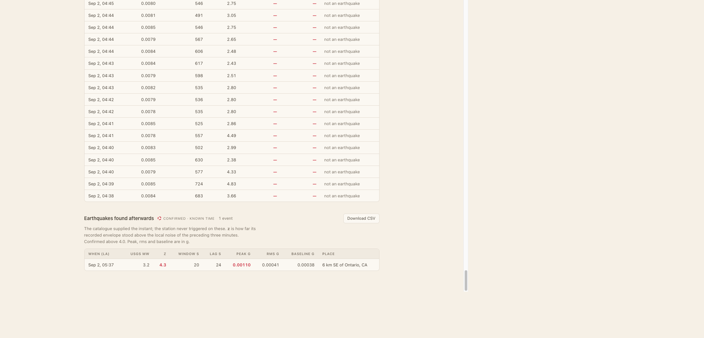

Can a seismic station built on a $12 motion sensor be falsifiable?
Not: can it detect an earthquake. Can it publish enough, unattended,
for a stranger to prove it wrong.
The problem
Most earthquakes here are beyond a cheap sensor
≈2,000
earthquakes of magnitude 2 or more, within 160 km, over five years
96.9%
of them too small or too far to move this sensor at all
A station in perfect working order spends almost all of its time
reporting nothing. So silence proves nothing, either way.
How it works

The catalog is the answer key — and the station does not control it.
Two words that must not be mixed
DETECTION
The trigger fired on its own. Nobody told it when to look.
So far: zero.
CONFIRMATION
The catalog named the second, and the recording was elevated there.
Evidence the ground moved. Not a discovery.
2 September 2026 · 12:37:12 UTC
M3.2, 6 km SE of Ontario, California
4.34
envelope, in standard deviations (threshold 4.00)
1.095 mg
shaking that arrived
0.44 mg
needed to be found afterwards
3.26 mg
needed by the blind trigger — it never fired
ci41540608 — the station was handed the second,
went back through its own recording, and the ground was moving there.
Published, the same day

The node is drawn as a 20 km disc. Its position is never published.
Published, the same day

Anyone can check the row against the USGS event page.
The objection: predicting after the fact
The law was public before the earthquake
1 Sep, 13:56 UTC
the ground-motion law committed to a public repository, 6601f1d
22.7 h
before the Ontario earthquake — and unchanged since
The commit history timestamps the freeze independently. You do not
have to take my word for it.
What it still cannot do
0
earthquakes found by the station on its own, in eight weeks
0 / 8
matched examples needed before it may print a magnitude
Confirmations are not allowed into that fit. They are selected for
being a large wiggle beside the noise, so their amplitude is biased high by
construction.
6 September 2026 · 07:13:11 UTC
The station accused itself
A closer M3.2, near Compton. The frozen law said the shaking should
have cleared the threshold. Nothing was in the recording.
32 min
after the earthquake, it published missed against itself
nobody
had asked it to look
Three days later
The catalog took it back
M3.2 → M3.07
revised down, and relocated deeper
flag withdrawn
nothing the station measured had changed
That is the price of a referee you do not control: it can take back
what it gave you — in both directions.
8 September 2026, evening
The counter says two. One is real.
33×
below the chip's own electrical noise — there was nothing to hear
1 in 55
measured false-confirmation rate, over 3,585 control windows
It arrived one day after that rate was measured. The row was not
deleted: a threshold retuned every time it embarrasses you has no error rate
left to quote.